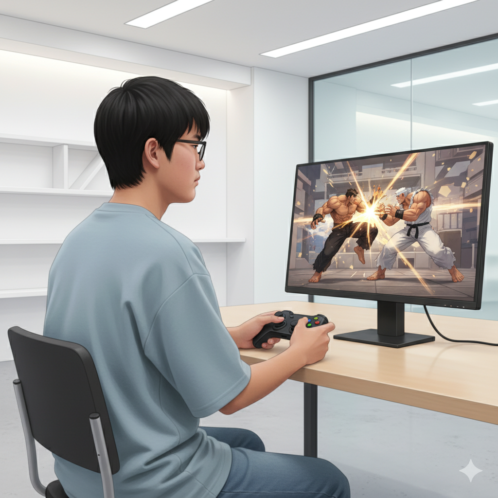
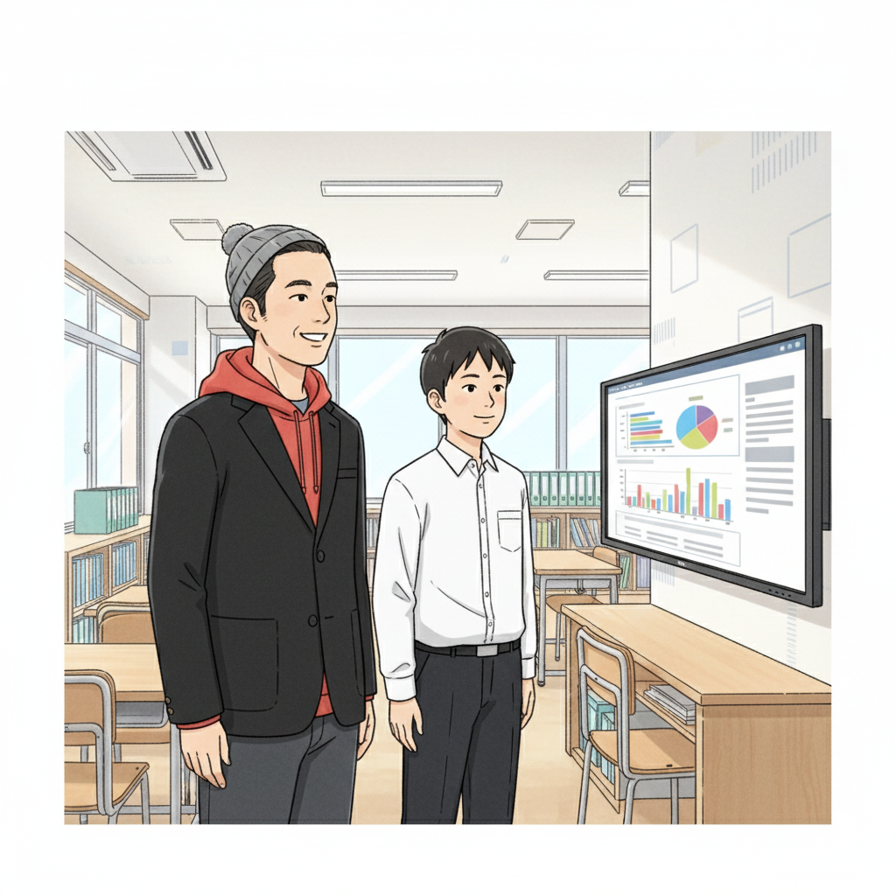
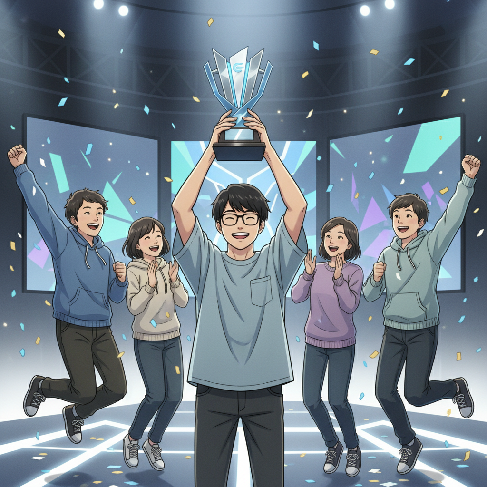
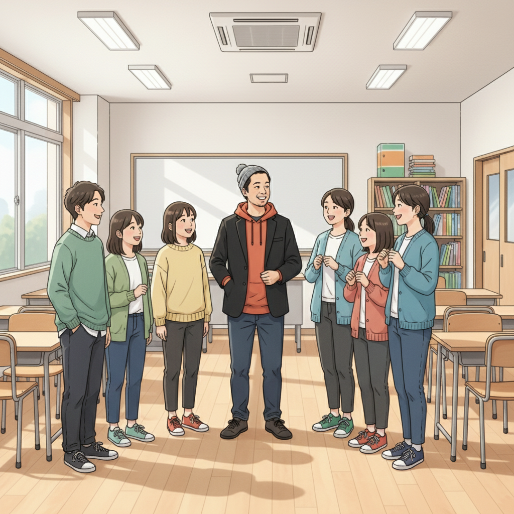

ゲームの世界で輝く！Y君とストリートファイター6(SF6)の出会い（Y君）

「負けたくない。絶対に強くなりたい！」高校生のY君は、誰よりも強い気持ちを持っていました。彼が夢中になったのは、格闘ゲーム、特にストリートファイター6(SF6)。複雑なコマンド入力、瞬時の判断、対戦相手の動きを読む戦略性…すべてがY君を惹きつけました。学校生活には馴染めない部分もあったけれど、ゲームの世界では、誰にも負けない集中力を発揮できたんです。
でも、最初は連戦連敗。「どうして勝てないんだ…」と落ち込む日々。そんな時、if塾の塾頭に出会いました。そこでY君は、自分が持つASD（自閉スペクトラム症）の特性が、ゲームにおいては大きな武器になることを知るのです。
if塾での出会いが才能を開花！集中力と反応速度を武器に（塾頭）

if塾で、Y君は自分の特性を理解し、それを強みに変える方法を学びました。塾頭は、Y君の驚異的な集中力と、目にも止まらぬ反応速度に目をつけました。「君の集中力は、並外れた才能だよ。それを活かさない手はない」と、塾頭はY君にアドバイスを送りました。
そこでY君は、自分の特性を活かすためのトレーニング方法を塾頭と共に考案。例えば、集中力を高めるために、Minecraftコマンドを駆使して独自のゲーム環境を作ったり、反応速度を鍛えるために、FPSゲームで集中的にトレーニングを行ったりしました。地道な努力の結果、Y君の腕はメキメキと上達していきました。
「Y君の成長は目覚ましいものでした。彼の集中力と情熱は、周りの生徒たちにも良い影響を与えてくれました」と塾頭は語ります。
仲間との出会いが自信に！そしてeスポーツ大会へ（Y君, 塾長）

if塾には、Y君と同じように、何かに夢中になっている仲間がたくさんいました。塾長もその一人。自身もADHD・ASDの診断を受け、中学時代は特別支援学級に通っていましたが、高校で塾頭と出会い、国立大学に進学した経験を持ちます。塾長はY君に、自身の経験を語り、「自分の特性を理解し、それを活かすことができれば、必ず道は開ける」と励ましました。
仲間たちとの交流を通して、Y君は少しずつ自信を取り戻していきました。「自分にもできるんだ」と思えるようになったY君は、ついにeスポーツ大会への出場を決意します。初めての大きな舞台。緊張と興奮が入り混じる中、Y君は練習の成果を存分に発揮し、見事、優勝を勝ち取ったのです！
「あの時の感動は、今でも忘れられません。if塾で出会った仲間たち、そして塾頭の支えがあったからこそ、今の自分があると思っています」とY君は語ります。
「好き」を「才能」に！あなただけの成長を応援します（if塾）

Y君の物語は、発達特性を持つ子どもたちが、自分の可能性を信じ、才能を開花させることができるということを教えてくれます。ASD ICT 才能を活かして活躍する道は、きっと見つかります。if塾は、そんな子どもたち一人ひとりの個性を尊重し、自分らしい成長をサポートします。
「何をやってもうまくいかない…」と悩んでいるあなた。「自分には才能なんてない…」と諦めかけているあなた。大丈夫、あなたの「好き」は、きっと「才能」に変わります。if塾で、私たちと一緒に、あなただけの輝きを見つけませんか？
🎯 興味を持っていただいた方へ
if塾では、発達特性を持つ子どもたちの「好き」を「才能」に変える教育を行っています。現在の記事内容と実際の活動に大きなズレはありませんが、詳細については直接お問い合わせください。
📌 記事について
この記事は、塾頭による完全自動化への挑戦としてAIが自動生成しています。将来的には塾頭が執筆しているような記事になることを目指しており、現時点では事実と異なる内容が含まれる可能性があります。最新の正確な情報については、お問い合わせフォームよりご確認ください。
🤖 Generated with AI - if塾のブログ自動化プロジェクト